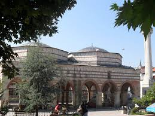

Nasrullah Camii, Kastamonu’nun merkezinde, şehrin tarihî dokusunu yansıtan en önemli eserlerden biridir. Cami, 1506 yılında II. Bayezid döneminde görev yapan Kastamonu Kadısı Nasrullah bin Abdullah tarafından inşa ettirilmiştir. Osmanlı mimarisinin klasik unsurlarını taşıyan cami, yüzyıllardır hem ibadet mekânı hem de sosyal yaşamın merkezi olarak kullanılmıştır.
Caminin en belirgin özelliği, büyük bir avluya sahip olması ve bu avlunun ortasında yer alan altı sütunlu şadırvanıdır. Bu şadırvan, sadece mimarisiyle değil, aynı zamanda halk arasında taşıdığı anlamla da dikkat çeker. Rivayete göre, bu şadırvandan bir kez su içen kişi mutlaka Kastamonu’ya tekrar döner. Bu inanç, şehre gelen birçok ziyaretçinin camiyi mutlaka görmesinin başlıca nedenlerinden biridir.
Nasrullah Camii; kesme taş ve düzgün kesilmiş kireçtaşı kullanılarak inşa edilmiştir. Geniş kubbesi, mihrap ve minberi sade fakat zariftir. Caminin hemen bitişiğinde yer alan kemerli köprü, camiyle birlikte bütüncül bir yapı oluşturur. Bu köprü, zamanında halkın çarşıdan camiye rahat geçebilmesi için inşa edilmiştir ve “Nasrullah Köprüsü” olarak anılır.
Camii, sadece bir ibadet yeri değil, aynı zamanda yüzyıllar boyunca eğitim, ilim, sohbet ve toplumsal dayanışmanın da merkezi olmuştur. Osmanlı döneminde burada medrese faaliyetleri yürütülmüş, birçok âlim bu camide ders vermiştir. Aynı zamanda caminin çevresi, Kastamonu'nun önemli siyasi ve sosyal olaylarına ev sahipliği yapmıştır.
Nasrullah Camii, Cumhuriyet döneminde de önemini korumuştur. Özellikle Atatürk’ün Şapka İnkılabı’nı anlatmak için 1925 yılında Kastamonu’yu ziyareti sırasında cami çevresi büyük mitinglere tanıklık etmiştir. Bu yönüyle cami, hem Osmanlı hem de Cumhuriyet tarihinin önemli duraklarından biri olmuştur.
Günümüzde de hem ibadet hem de turistik amaçlarla yoğun olarak ziyaret edilen cami, Kastamonu’yu tanımak isteyen herkesin mutlaka görmesi gereken yapılardan biridir. Gerek mimarisi, gerek taşıdığı manevi anlam, gerekse tarihi boyunca üstlendiği roller ile Nasrullah Camii, yalnızca Kastamonu’nun değil, Türkiye'nin kültürel mirası içinde özel bir yere sahiptir.
